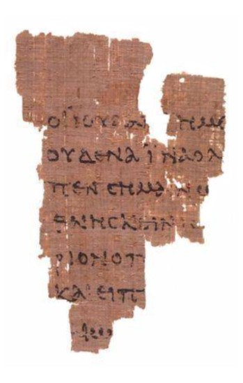

The Digital Text
In this post we will example the digital text and how and why it is encoded.
Denarius
Wars are often an unexpected event, and a lot of the major currency developments in the 19th and 20th centuries were due to wars. In the ancient world it was no different. The requirement to quickly gather resources required an efficient form of money.
During the Second Punic War, in 211 BC, Rome brought out the Denarius, which means ‘containing ten’ - because one silver Denarius was worth ten bronze (later copper) Asses.
During the Third Punic war, in 140 BC, Rome decided to go hexadecimal, where one silver-coloured Denarius became worth 16 copper Asses.
The silver-coloured Denarius was considered a day’s wages for a soldier. The gold-coloured Solidus varied in value but eventually stabilised by the 8th century as 12 denarii.
The Romans carried spread currency around and in Britain, the denarius became the penny but was still written as d until 1971 e.g. 5d for 5 pence.
12d made a shilling, which is the Anglo-Saxon term for the Solidus. The shilling was in the 16th century pegged to the value of a cow in Kent market.
Twenty shilling made a pound which was named after the unit of mass, a pound in cash was originally worth the value of a pound weight of silver (which is now about £300).
The pound of a unit of mass is itself Roman of course, from libra, which is why pound is shortened to lb. The pound £ sign was originally an L. 1 lb in mass is 16 ounces.
Part the deal when Britain applied to join the European Economic Community in the 1960s and 1970s, was that we got rid of all these crazy measurements and adopted metric, also known as scientific measurements, which we did eventually, to a certain extent. For example, milk, beer and cider are officially sold in units of 568 mL!
So until recently, the idea of non-base 10 measurements was completely normal.
Binary
George Boole was a theologian who was also one of the greatest mathematicians of the 19th Century.Boole understood mathematics and religion as intertwined. George Boole believed that studying mathematics would help reveal a new understanding of God.

More on George Boole: http://zeth.net/archive/2007/07/19/what-is-truth-part-3-all-you-need-is-one-and-zero/
The core idea that all knowledge and thought could be reduced to two factors nothing (0) and God (1), had long been discussed, for example by the the Jesuit Gottfried Leibniz writing in the 17th Century. However, Boole had the mathematical knowledge to take the idea and build a complete system of logic around it.

Everything is either True (God - 1) or False (nothing - 0):
1 or 0 == 1
0 or 1 == 1
1 or 1 == 0
0 or 0 == 0
1 and 1 == 1
0 and 0 == 0
1 and 0 == 0
0 and 1 == 0
not 0 == 1
not 1 == 0
Everything that is not God is nothingness, everything that is something is God. God fills the nothingness but the nothingness cannot conquer God.
Any number can be represented by any sequence of bits. A bit is 0 or a 1.
| Binary | Decimal |
|---|---|
| 0 | 0 |
| 1 | 1 |
| 10 | 2 |
| 11 | 3 |
| 100 | 4 |
| 101 | 5 |
| 110 | 6 |
| 111 | 7 |
| 1000 | 8 |
| 1001 | 9 |
| 1010 | 10 |
| 1011 | 11 |
| 1100 | 12 |
| 1101 | 13 |
| 1110 | 14 |
| 1111 | 15 |
| 10000 | 16 |
Traditionally, eight bits was called a byte (more correctly it is an octet). Four bits is a nibble.
A computer processor has lots of microscopic transistors. The CPU in my laptop (the Intel Ivy Bridge) has 1.4 billion of them. Each transistor is like a switch with an on and off state.
Hexadecimal
Binary is very low level. The first level of abstraction over binary is called hexadecimal.
In previous lecture, we looked at how and when and where computing was developed. These early computer developers choose the most efficient representation. As we mentioned earlier, until recently non-base 10 measurements were completely normal.
Hexadecimal (‘hex’ for short) is counting in base 16, here is the table from above with hex as well:
| Binary | Hex | Decimal |
|---|---|---|
| 0 | 0 | 0 |
| 1 | 1 | 1 |
| 10 | 2 | 2 |
| 11 | 3 | 3 |
| 100 | 4 | 4 |
| 101 | 5 | 5 |
| 110 | 6 | 6 |
| 111 | 7 | 7 |
| 1000 | 8 | 8 |
| 1001 | 9 | 9 |
| 1010 | a | 10 |
| 1011 | b | 11 |
| 1100 | c | 12 |
| 1101 | d | 13 |
| 1110 | e | 14 |
| 1111 | f | 15 |
| 10000 | 10 | 16 |
Now it is easy to convert any binary number to hex. You just split it up into nibbles from the right.
So this number:
11111011110
Split up is:
0111 1101 1110
7 d e
So in hex it is 7de.
What number is it in decimal? Well that is more complicated. Going from binary to decimal requires you to split the binary number up into parts:
10000000000 1024
1000000000 512
100000000 256
10000000 128
1000000 64
10000 16
1000 8
100 4
10 2
1024 + 512 + 256 + 128 + 64 + 16 + 8 + 4 + 2 = ?
So data is electrical impulses in a transistor, which represent 1 and 0, which are then hexadecimal numbers.
Now we have numbers, we can now encode characters. Each character is given a hex number.
So 41 in hex (which is 65 in decimal) is “latin capital letter A”.
There are different encodings (mapping between numbers and characters) but the only one that really matters in 2014 is called UTF-8 commonly called Unicode (although there are other forms of Unicode which did not win).
UTF-8 has room for 1,112,064 different characters and symbols which aim to represent all of the world’s languages.
The first 128 characters are carried over from an older standard called ASCII. The first 32 of these are historic control characters for controlling printers and teletype devices (remember those from a previous lecture?).
20 in hex (so 32 in decimal) is the empty space, then we get punctuation, then we get the numbers and so more punctuation etc then the letters in upper case then some more symbols then the letters in lower case etc.
This gets us to 7E (126) which is ~, and we have all of the English keyboard covered. The next 129 characters are Western European languages (German etc) and then it carries on after that through all the world’s letters and symbols.
Including some really fun stuff added to give compatibility with Japanese mobile phones:
http://www.fileformat.info/info/unicode/char/1f4a9/index.htm http://www.fileformat.info/info/unicode/char/1f302/index.htm http://www.fileformat.info/info/unicode/block/miscellaneous_symbols_and_pictographs/images.htm http://en.wikipedia.org/wiki/Emoji
So a digital text is a series of these hexadecimal numbers representing characters and symbols including spaces (20 in hex/32 in decimal) and control codes such as line breaks (0A in hex, 10 in decimal) and so on.
Here is a nice chart version of the first 127 (ASCII) characters: http://web.cs.mun.ca/~michael/c/ascii-table.html
So you can decode these characters (with some spaces added to make it simpler):
41 6e 64 20 74 68 65 72 65 66 6f 72 65 20 6e 65 76 65 72 20 73 65 6e 64 20 74 6f 20 6b 6e 6f 77 20 66 6f 72 20 77 68 6f 6d 20 74 68 65 20 62 65 6c 6c 20 74 6f 6c 6c 73 3b 20 49 74 20 74 6f 6c 6c 73 20 66 6f 72 20 74 68 65 65 2e
To make it clear that something is a hex value, it is often prefixed with 0x or x or U+.
This is as good as it far as it goes. But to make practical use of the data, just loads of text doesn’t help that much.
If we want to make a digital representation of a humanities artefact like a manuscript, we need to use a file format. Otherwise the digital text is of limited use for other scholars and software.
Why not use a word processor?
A word processor is an approximation of a late 19th century typewriter. A word processor will not help in transcribing this:

Let alone this:
What about this:

How about this:

In the 1980s and onwards, a group of humanities scholars created the TEI, which is a set of guidelines for digitally representing humanities data:
These Guidelines apply to texts in any natural language, of any date, in any literary genre or text type, without restriction on form or content.
The guidelines can be found online here:
http://www.tei-c.org/release/doc/tei-p5-doc/en/html/
The TEI was initially SGML based then became XML based. What this means is that the text of the artefact is typed up, and meaning and extra information is inserted into the text using angle brackets.
An example of a text encoded using the TEI format: http://epapers.bham.ac.uk/718/1/47.xml
So in this simple line here:
<w n="6">testimonium</w>
The element <w> which means word, has an attribute n with value 6 which quite obviously tells us that it is word number 6. The text of the word then follows, and then the word ends with a closing tag: </w>
As explained in the preface to the TEI guidelines, part of the reason for them was to enable sharing of data and a new generation of shared TEI-supporting software to emerge.
Sadly that never really happened. The problem with the TEI is that it is a huge standard that doesn’t really simplify the problem space in any way. There are hundreds of available elements and every author of a TEI document uses their own subset it in his/her own way.
Churchill famously said that “Democracy is the worst form of government, except for all those other forms that have been tried from time to time.”
TEI is the worst form of encoding, except for all the other forms that have been tried from time to time.
Wizard of OZ
https://github.com/TEI-examples/tei-examples/blob/master/nypl.org/WizardOfOz.xml
JSON
Current interest is in storing text in JSON. Here is a really simple example:
http://zeth.net/examples/example.json
It shows a single verse.
Plain Text formats
Collating
Collating is comparing texts together. Show examples.